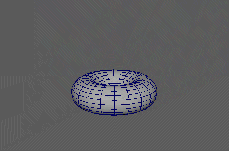

提取网格的面并根据现有 MASH 点将其进行转换。提取过程与典型的
“提取”(Extract)命令不同，这是因为面在 DAG 中实际上并未分离。因此，模型的平滑着色处理将会保留。
注： 通常，您希望 MASH 网络中的点数大于或等于分解网格中的面数。如果面没有相应的点来变换，则会聚成一团。
注： 使用此节点时，请确保在“动画首选项”(Animation Preferences)中将“求值模式”(Evaluation Mode)设置为“DG”。
炸开节点
-
阈值(Threshold)
- 确定面从网格中提取之前需要移动的最小距离（以世界单位表示）。较高的阈值会导致面关闭捕捉较远距离处更陡峭的网格，而不是同一距离处更平滑的网格。
-
启用位置(Enable Position)、启用旋转(Enable Rotation)、启用缩放(Enable Scale)
- 确定炸开面将继承点的哪个变换值。
-
分解网格(Exploding Mesh)
- 显示要炸开的多边形网格。可以使用鼠标中键将网格拖入此字段，或者单击鼠标右键连接选定网格。如果网格已连接，还可以单击鼠标右键将其移除或显示在大纲视图中。
强度
-
缩放至零(Scale to Zero)
- 在强度值增加的同时缩放网格面。对于创建过渡类型效果十分有用。
-
强度(Strength)
- 将面的过渡从其开始配置减弱为炸开配置。
-
随机强度(Random Strength)
- 将面的过渡随机化效果从其开始配置减弱为炸开配置。请注意，与大多数其他 MASH 节点不同，至少需要一些随机化才能看到爆炸的任何效果（即大于 0 的值）。
-
阶跃强度(Step Strength)
- 每次启用一个点的节点效果。
-
强度贴图(Strength Map)
- 确定输入文件（2D 纹理、动画纹理等）来控制该节点的效果。
-
贴图投影轴(Map Projection Axis)
- 确定投影“强度贴图”(Strength Map)时所沿的轴。
-
贴图辅助对象(Map Helper)
- 显示用于在场景中交互放置“强度贴图”(Strength Map)的对象。可以在该字段上单击鼠标右键来创建新的辅助对象（平面）（如果不存在）。还可以使用鼠标中键将网格拖入此字段，或者单击鼠标右键连接选定网格。如果网格已连接，还可以单击鼠标右键来断开其连接或者将其显示在大纲视图中。
注： 为获得最佳结果，请将相同的纹理指定给“强度贴图”(Strength Map)和“贴图辅助对象”(Map Helper)（在创建新的辅助对象时将自动执行此操作）。